MurMur
Connecting…
Use this meeting
Disconnect
Start a call in MurMur. Keep Meet’s People panel open for reliable participant names. Ambiguous speakers remain “Meeting.” Only names and speaking activity stay on this Mac.